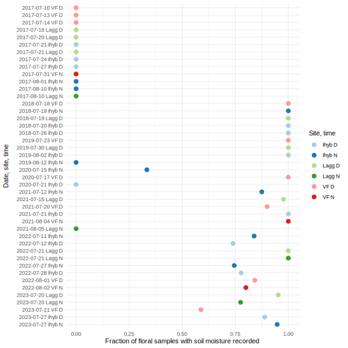
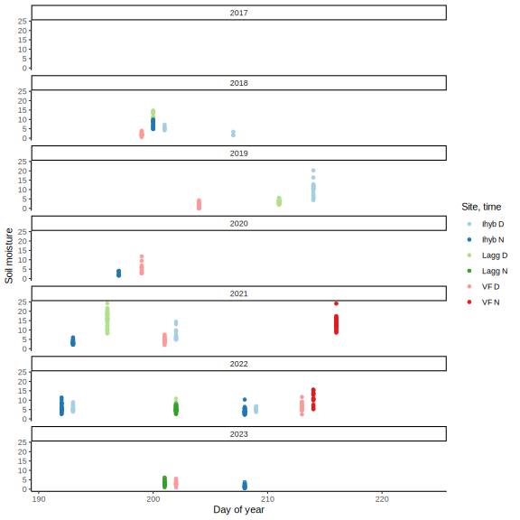
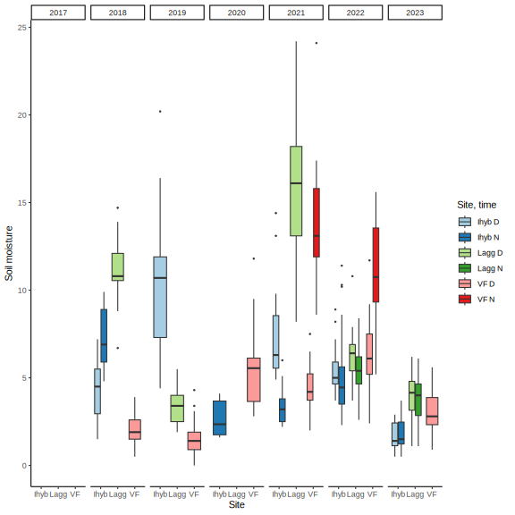

library(tidyverse)
library(knitr)
knitr::opts_chunk$set(comment="", cache=T, warning = F, message = F,
fig.path = "images/", dev="svglite", dev.args=list(fix_text_size=FALSE), fig.height=8, fig.width=8)
options(digits=4, knitr.kable.NA = "") # for kablesmetadata <- list.files("data/volatiles", pattern = "Ipomopsis long-term volatiles - 20", full.names=T) %>%
map_dfr(~read_tsv(.x, show_col_types = F) %>%
mutate(across(any_of(c("pump_id", "plant", "vial", "sample")), as.character)), .id="metafile") %>%
mutate(year = year(date))
# metadata %>% add_count(year, date, time, site, type, sample) %>% filter(n>1) %>%
# arrange(year, date, time, site, type, sample) %>% write_tsv("data/volatiles/metadupes.tsv", na="")Field metadata
ggplot(metadata, aes(x=yday(date), fill=paste(site, time))) +
facet_wrap(vars(year), ncol=1) + geom_bar() +
scale_fill_brewer(palette = "Paired") + theme_classic() +
labs(x="Day of year", y="Samples", fill="Site, time")
metadata %>% filter(type=="floral") %>% count(year, site, time) %>%
pivot_wider(names_from=c("site","time"), values_from="n") %>% kable(caption = "floral samples")| year | Ihyb_D | Ihyb_N | Lagg_D | Lagg_N | VF_D | VF_N |
|---|---|---|---|---|---|---|
| 2017 | 34 | 25 | 50 | 22 | 53 | 3 |
| 2018 | 8 | 10 | 15 | 17 | ||
| 2019 | 25 | 29 | 40 | 17 | ||
| 2020 | 20 | 24 | 14 | |||
| 2021 | 15 | 24 | 44 | 28 | 20 | 21 |
| 2022 | 41 | 82 | 49 | 47 | 19 | 20 |
| 2023 | 18 | 19 | 42 | 40 | 17 |
metadata %>% filter(type=="ambient") %>% count(year, site, time) %>%
pivot_wider(names_from=c("site","time"), values_from="n") %>% kable(caption = "ambient samples")| year | Ihyb_D | Ihyb_N | Lagg_D | Lagg_N | VF_D | VF_N |
|---|---|---|---|---|---|---|
| 2017 | 3 | 1 | 3 | 1 | 3 | 1 |
| 2018 | 3 | 2 | 2 | 2 | ||
| 2019 | 5 | 4 | 3 | 6 | ||
| 2020 | 3 | 3 | 2 | |||
| 2021 | 3 | 3 | 3 | 7 | 2 | 2 |
| 2022 | 10 | 6 | 3 | 5 | 4 | 4 |
| 2023 | 2 | 3 | 4 | 4 | 1 |
metadata %>% filter(type=="floral") %>% count(year, site, time, plant) %>% count(year, site, time) %>%
pivot_wider(names_from=c("site","time"), values_from="n") %>% kable(caption = "plants")| year | Ihyb_D | Ihyb_N | Lagg_D | Lagg_N | VF_D | VF_N |
|---|---|---|---|---|---|---|
| 2017 | 12 | 11 | 11 | 10 | 44 | 3 |
| 2018 | 8 | 10 | 15 | 17 | ||
| 2019 | 25 | 29 | 40 | 16 | ||
| 2020 | 20 | 21 | 13 | |||
| 2021 | 15 | 18 | 41 | 28 | 20 | 19 |
| 2022 | 26 | 31 | 48 | 46 | 19 | 20 |
| 2023 | 18 | 19 | 41 | 40 | 17 |
left_join(metadata %>% filter(type=="floral") %>% count(year, site, time, name="samples"),
metadata %>% filter(type=="floral") %>% count(year, site, time, plant) %>% count(year, site, time, name="plants")) %>%
mutate(samples_per_plant = samples/plants, .keep="unused") %>%
pivot_wider(names_from=c("site","time"), values_from="samples_per_plant") %>% kable(caption = "samples per plant")| year | Ihyb_D | Ihyb_N | Lagg_D | Lagg_N | VF_D | VF_N |
|---|---|---|---|---|---|---|
| 2017 | 2.833 | 2.273 | 4.545 | 2.200 | 1.204 | 1.000 |
| 2018 | 1.000 | 1.000 | 1.000 | 1.000 | ||
| 2019 | 1.000 | 1.000 | 1.000 | 1.062 | ||
| 2020 | 1.000 | 1.143 | 1.077 | |||
| 2021 | 1.000 | 1.333 | 1.073 | 1.000 | 1.000 | 1.105 |
| 2022 | 1.577 | 2.645 | 1.021 | 1.022 | 1.000 | 1.000 |
| 2023 | 1.000 | 1.000 | 1.024 | 1.000 | 1.000 |
Soil moisture
metadata %>% filter(type=="floral") %>% group_by(year, site, time, date) %>% summarize(has_VWC = mean(!is.na(VWC))) %>%
ggplot(aes(y=fct_rev(paste(date, site, time)), color=paste(site, time), x=has_VWC)) + geom_point(size=3) +
scale_color_brewer(palette = "Paired") + theme_minimal() +
labs(x="Fraction of floral samples with soil moisture recorded", y="Date, site, time", color="Site, time")
ggplot(metadata, aes(x=yday(date), color=paste(site, time), y=VWC)) +
facet_wrap(vars(year), ncol=1) + geom_point() +
scale_color_brewer(palette = "Paired") + theme_classic() +
labs(x="Day of year", y="Soil moisture", color="Site, time")
ggplot(metadata, aes(x=site, fill=paste(site, time), y=VWC)) +
facet_wrap(vars(year), nrow=1) + geom_boxplot(outlier.size=0.5) +
scale_fill_brewer(palette = "Paired") + theme_classic() +
labs(x="Site", y="Soil moisture", fill="Site, time")
Extraction time
ggplot(metadata, aes(x=site, fill=paste(site, time), y=bag)) +
facet_grid(time~year, scales = "free_y") + geom_boxplot(outlier.size=0.5) +
scale_fill_brewer(palette = "Paired") + theme_minimal() +
labs(x="Site", y="Bag time", fill="Site, time")
ggplot(metadata, aes(x=site, fill=paste(site, time), y=(pump-bag)/60)) +
facet_wrap(vars(year), nrow=1) + geom_boxplot(outlier.size=0.5) +
scale_fill_brewer(palette = "Paired") + theme_minimal() +
labs(x="Site", y="Equilibration time (min)", fill="Site, time")
ggplot(metadata, aes(x=site, fill=paste(site, time), y=(end-pump)/60)) +
facet_wrap(vars(year), nrow=1) + geom_boxplot(outlier.size=0.5) +
scale_fill_brewer(palette = "Paired") + theme_minimal() +
labs(x="Site", y="Pumping time (min)", fill="Site, time")Matching field metadata and filenames
filemeta <- read_csv("data/volatiles/Ipomopsis GCMS files - ipo_meta_split.csv") %>%
filter(type != "blank", #GC blank
!verdict %in% c("skip-notrun", #tube was skipped by the autosampler
"leak-blank", #tube leaked, not desorbed but GC run anyway
"mismatch-leak", #tube leaked, tube time not aligned with file time
"skip-rename-mismatch-leak", #tube leaked after skip, tube time not aligned with file time
"filemoved" #file was moved on disk so creation time is wrong
)) %>% drop_na(type, FileName) %>% #no file match to desorb start time
distinct(FileName, .keep_all = T) %>% #some files got duplicated from fuzzy matching times
mutate(date = ymd(date), year=year(date), vial=as.character(vial))
#TODO figure out which of these dupes has the real sample
filemeta %>% add_count(year, date, time, site, type, sample) %>% filter(n>1) %>%
arrange(year, date, time, site, type, sample) %>% write_tsv("data/volatiles/filedupes.tsv", na="")
#until then, use only the first duplicate
filemeta <- filemeta %>% distinct(year, date, time, site, type, sample, .keep_all=T)
bind_rows(files=filemeta, field=metadata, .id="source")%>%
ggplot(aes(y=paste(date, site, time), fill=source)) +
geom_bar(position=position_dodge(width=0.4)) +
scale_fill_brewer(palette = "Set2") + theme_classic() +
labs(y="Date, site, time", x="Samples", fill="Source")
full_join(count(filemeta, type, name="files"), count(metadata, type, name="field")) %>% kable()| type | files | field |
|---|---|---|
| ambient | 107 | 113 |
| floral | 929 | 952 |
| leaf | 16 | 16 |
full_join(count(filemeta, year, date, time, site, name="files"),
count(metadata, year, date, time, site, name="field")) %>% kable()| year | date | time | site | files | field |
|---|---|---|---|---|---|
| 2017 | 2017-07-10 | D | VF | 22 | 11 |
| 2017 | 2017-07-13 | D | VF | 29 | 29 |
| 2017 | 2017-07-14 | D | VF | 19 | 19 |
| 2017 | 2017-07-18 | D | Lagg | 22 | 23 |
| 2017 | 2017-07-20 | D | Lagg | 19 | 19 |
| 2017 | 2017-07-21 | D | Ihyb | 3 | 3 |
| 2017 | 2017-07-21 | D | Lagg | 14 | 14 |
| 2017 | 2017-07-24 | D | Ihyb | 30 | 31 |
| 2017 | 2017-07-27 | D | Ihyb | 6 | 6 |
| 2017 | 2017-07-31 | N | VF | 5 | 5 |
| 2017 | 2017-08-01 | N | Ihyb | 25 | 25 |
| 2017 | 2017-08-10 | N | Ihyb | 2 | 2 |
| 2017 | 2017-08-10 | N | Lagg | 24 | 24 |
| 2018 | 2018-07-18 | D | VF | 20 | 20 |
| 2018 | 2018-07-19 | D | Lagg | 18 | 18 |
| 2018 | 2018-07-19 | N | Ihyb | 13 | 13 |
| 2018 | 2018-07-20 | D | Ihyb | 8 | 8 |
| 2018 | 2018-07-26 | D | Ihyb | 4 | 4 |
| 2019 | 2019-07-23 | D | VF | 23 | 23 |
| 2019 | 2019-07-30 | D | Lagg | 43 | 43 |
| 2019 | 2019-08-02 | D | Ihyb | 29 | 30 |
| 2019 | 2019-08-12 | N | Ihyb | 32 | 33 |
| 2020 | 2020-07-15 | N | Ihyb | 23 | 27 |
| 2020 | 2020-07-17 | D | VF | 14 | 16 |
| 2020 | 2020-07-21 | D | Ihyb | 20 | 23 |
| 2021 | 2021-07-12 | N | Ihyb | 27 | 27 |
| 2021 | 2021-07-15 | D | Lagg | 46 | 47 |
| 2021 | 2021-07-20 | D | VF | 6 | 22 |
| 2021 | 2021-07-21 | D | Ihyb | 20 | 18 |
| 2021 | 2021-08-04 | N | VF | 23 | 23 |
| 2021 | 2021-08-05 | N | Lagg | 35 | 35 |
| 2022 | 2022-07-11 | N | Ihyb | 36 | 34 |
| 2022 | 2022-07-12 | D | Ihyb | 29 | 32 |
| 2022 | 2022-07-21 | D | Lagg | 51 | 52 |
| 2022 | 2022-07-21 | N | Lagg | 51 | 52 |
| 2022 | 2022-07-27 | N | Ihyb | 54 | 54 |
| 2022 | 2022-07-28 | D | Ihyb | 11 | 19 |
| 2022 | 2022-08-01 | D | VF | 21 | 23 |
| 2022 | 2022-08-02 | N | VF | 24 | 24 |
| 2023 | 2023-07-20 | D | Lagg | 49 | 46 |
| 2023 | 2023-07-20 | N | Lagg | 44 | 44 |
| 2023 | 2023-07-21 | D | VF | 17 | 18 |
| 2023 | 2023-07-27 | D | Ihyb | 20 | 20 |
| 2023 | 2023-07-27 | N | Ihyb | 21 | 22 |
library(tidylog)
meta <- full_join(mutate(filemeta, files=1),
mutate(metadata, field=1), by=c("year", "date", "time", "site", "type", "sample")) %>%
mutate(files=replace_na(files, 0), field=replace_na(field, 0), match = files==1 & field==1)
meta %>% filter(match==F) %>% arrange(date, time, site, field, files) %>%
select(date, time, site, type, field, files, sample,
rundate, samplename, vial.x, vial.y, split_notes, notes) %>%
write_tsv("data/volatiles/matching.tsv", na="")
meta %>% group_by(year, date, time, site) %>%
summarize(across(c(files, field, match), mean)) %>%
mutate(files=files-match, field=field-match) %>%
pivot_longer(c(files, field, match)) %>%
mutate(name=factor(name, levels=c("files", "match", "field"))) %>%
ggplot(aes(y=paste(date, site, time), x=value, fill=name)) + geom_col() +
labs(x="",y="", fill="") + theme_minimal()